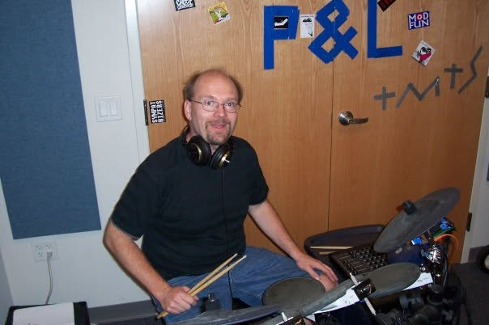

I am a reliable drummer with over 40 years of playing experience. My core roots span rock and progressive music, alongside a passionate focus on jazz and odd time signatures.
I am currently looking for low-commitment musical connections—ideally small jazz combos (duos, trios, quartets) focused on improvising over classic jazz standards (such as those from The Real Book), as well as casual home jams or community ensembles with no high-pressure demands.
My playing style embraces odd time signatures, time changes, polyrhythms, and the expansive sound palette offered by electronic drums.
Open to casual projects within a 30-minute Dunellen radius (Piscataway, Edison, Somerville, Westfield, New Brunswick, etc.):
Equipped with a compact acoustic setup specifically selected and tuned for acoustic jazz settings, dynamic control, and low stage volume.
Features warm 7-ply mahogany shells tuned for sensitive dynamics and classic jazz resonance. The compact footprint easily fits tight stage corners, coffeehouses, and casual living room jams.
Selected for dark, vintage-voiced tone and low-volume stick articulation—providing a warm, supportive cushion without overpowering the ensemble.
Playing drums since 1978. Over the decades, I've performed across a broad range of styles including:
Orchestral Music • Big-Band Jazz • Classic Rock • Blues • Progressive & Electronic Rock • Jam Band / Grateful Dead • New Wave / Devo
While my commercial releases highlight my background in progressive and instrumental rock, they demonstrate my studio timing, experience with acoustic/electronic hybrid setups, and overall musicality.
Note: Also featured on early regional releases, including the 1994 cassette sampler Neticated (performing on the track "Eyes Of The World").
Below are live improvisational performance clips featuring me on electronic and acoustic drums:
Dynamics & Space: An exploration of restraint and dynamic contrast in a live improvised setting...
Sound Design & Sonic Texture: Live improvised jazz-prog with a 6-piece ensemble...
Supportive Playing & Swing Feel: Ambient jazz-prog improvisation opening with light, sensitive cymbal work...
A short clip of raw footage drumming with Brainstatik at Electro-Music 2012.
Performing rock and blues covers live in Bound Brook, NJ. Raw footage capturing a classic 90s club gig.
A broader archive of live performances, studio recordings, and progressive space-rock improvisations.
Available for jams and rehearsals within a 30-minute drive of Dunellen, NJ (Central Jersey).
Email GlennOr reach out directly: glennrobitaille@hotmail.com